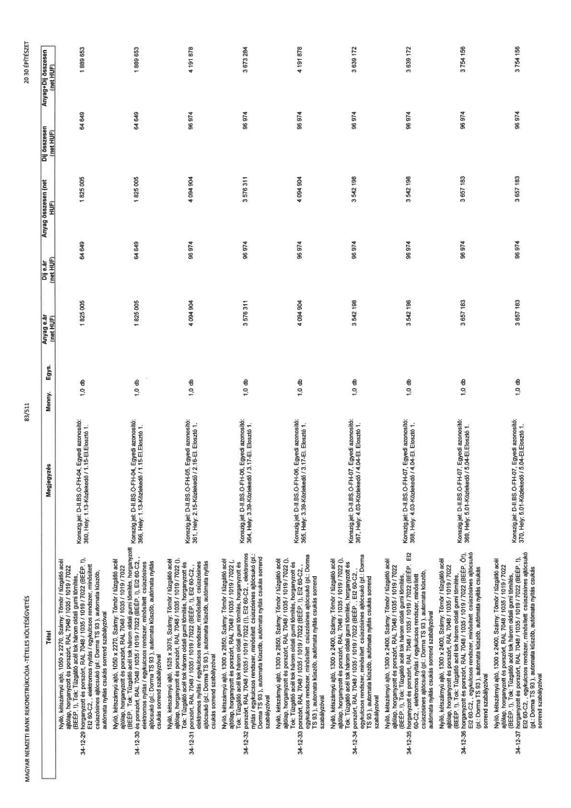

| Tétel | Megjegyzés | Menny. | Egys. | Anyag e.ár (net HUF) | Díj e.ár (net HUF) | Anyag összesen (net HUF) | Díj összesen (net HUF) | Anyag+Díj összesen (net HUF) |
|---|---|---|---|---|---|---|---|---|
| 34-12-29 | Nyíló, kétszárnyú ajtó, 1050 x 2270, Szárny: Tömör / tűzgátló acél ajtólap, horganyzott és porszórt, RAL 7048 / 1035 / 1019 / 7022 (BÉÉP: I), Tok: Tűzgátló acél tok három oldali gumi tömítés, horganyzott és porszórt, RAL 7048 / 1035 / 1019 / 7022 (BÉÉP: I), EI2 60-C2,, elektromos nyitás / egykulcsos rendszer, minősített csúszósínes ajtócsukó (pl.: Dorma TS 93), automata küszöb, automata nyitás csukás sorrend szabályzóval; Konszign. jel: D-II.BS.O-FH-04, Egyedi azonosító: 360, Hely: 1.13-Közlekedő / 1.15-EI. Elosztó 1. | 1,0 | db | 1 825 005 | 64 649 | 1 825 005 | 64 649 | 1 889 653 |
| 34-12-30 | Nyíló, kétszárnyú ajtó, 1050 x 2270, Szárny: Tömör / tűzgátló acél ajtólap, horganyzott és porszórt, RAL 7048 / 1035 / 1019 / 7022 (BÉÉP: I), Tok: Tűzgátló acél tok három oldali gumi tömítés, horganyzott és porszórt, RAL 7048 / 1035 / 1019 / 7022 (BÉÉP: I), EI2 60-C2,, elektromos nyitás / egykulcsos rendszer, minősített csúszósínes ajtócsukó (pl.: Dorma TS 93), automata küszöb, automata nyitás csukás sorrend szabályzóval; Konszign. jel: D-II.BS.O-FH-04, Egyedi azonosító: 366, Hely: 1.13-Közlekedő / 1.15-EI. Elosztó 1. | 1,0 | db | 1 825 005 | 64 649 | 1 825 005 | 64 649 | 1 889 653 |
| 34-12-31 | Nyíló, kétszárnyú ajtó, 1525 x 3075, Szárny: Tömör / tűzgátló acél ajtólap, horganyzott és porszórt, RAL 7048 / 1035 / 1019 / 7022 (), Tok: Tűzgátló acél tok három oldali gumi tömítés, horganyzott és porszórt, RAL 7048 / 1035 / 1019 / 7022 (BÉÉP: I), EI2 60-C2,, elektromos nyitás / egykulcsos rendszer, minősített csúszósínes ajtócsukó (pl.: Dorma TS 93), automata küszöb, automata nyitás csukás sorrend szabályzóval; Konszign. jel: D-II.BS.O-FH-05, Egyedi azonosító: 361, Hely: 2.15-Közlekedő / 2.16-EI. Elosztó 1. | 1,0 | db | 4 094 904 | 96 974 | 4 094 904 | 96 974 | 4 191 878 |
| 34-12-32 | Nyíló, kétszárnyú ajtó, 1300 x 2850, Szárny: Tömör / tűzgátló acél ajtólap, horganyzott és porszórt, RAL 7048 / 1035 / 1019 / 7022 (, Tok: Tűzgátló acél tok három oldali gumi tömítés, horganyzott és porszórt, RAL 7048 / 1035 / 1019 / 7022 (I), EI2 60-C2,, elektromos nyitás / egykulcsos rendszer, minősített csúszósínes ajtócsukó (pl.: Dorma TS 93), automata küszöb, automata nyitás csukás sorrend szabályzóval; Konszign. jel: D-II.BS.O-FH-06, Egyedi azonosító: 364, Hely: 3.39-Közlekedő / 3.17-EI. Elosztó 1. | 1,0 | db | 3 576 311 | 96 974 | 3 576 311 | 96 974 | 3 673 284 |
| 34-12-33 | Nyíló, kétszárnyú ajtó, 1300 x 2850, Szárny: Tömör / tűzgátló acél ajtólap, horganyzott és porszórt, RAL 7048 / 1035 / 1019 / 7022 (), Tok: Tűzgátló acél tok három oldali gumi tömítés, horganyzott és porszórt, RAL 7048 / 1035 / 1019 / 7022 (BÉÉP: I), EI2 60-C2,, egykulcsos rendszer, minősített csúszósínes ajtócsukó (pl.: Dorma TS 93), automata küszöb, automata nyitás csukás sorrend szabályzóval; Konszign. jel: D-II.BS.O-FH-06, Egyedi azonosító: 365, Hely: 3.39-Közlekedő / 3.17-EI. Elosztó 1. | 1,0 | db | 4 094 904 | 96 974 | 4 094 904 | 96 974 | 4 191 878 |
| 34-12-34 | Nyíló, kétszárnyú ajtó, 1300 x 2400, Szárny: Tömör / tűzgátló acél ajtólap, horganyzott és porszórt, RAL 7048 / 1035 / 1019 / 7022 (), Tok: Tűzgátló acél tok három oldali gumi tömítés, horganyzott és porszórt, RAL 7048 / 1035 / 1019 / 7022 (BÉÉP: I), EI2 60-C2,, egykulcsos rendszer, minősített csúszósínes ajtócsukó (pl.: Dorma TS 93), automata küszöb, automata nyitás csukás sorrend szabályzóval; Konszign. jel: D-II.BS.O-FH-07, Egyedi azonosító: 367, Hely: 4.03-Közlekedő / 4.04-EI. Elosztó 1. | 1,0 | db | 3 542 198 | 96 974 | 3 542 198 | 96 974 | 3 639 172 |
| 34-12-35 | Nyíló, kétszárnyú ajtó, 1300 x 2400, Szárny: Tömör / tűzgátló acél ajtólap, horganyzott és porszórt, RAL 7048 / 1035 / 1019 / 7022 (), Tok: Tűzgátló acél tok három oldali gumi tömítés, horganyzott és porszórt, RAL 7048 / 1035 / 1019 / 7022 (BÉÉP: I), EI2 60-C2,, egykulcsos rendszer, minősített csúszósínes ajtócsukó (pl.: Dorma TS 93), automata küszöb, automata nyitás csukás sorrend szabályzóval; Konszign. jel: D-II.BS.O-FH-07, Egyedi azonosító: 368, Hely: 4.03-Közlekedő / 4.04-EI. Elosztó 1. | 1,0 | db | 3 542 198 | 96 974 | 3 542 198 | 96 974 | 3 639 172 |
| 34-12-36 | Nyíló, kétszárnyú ajtó, 1300 x 2400, Szárny: Tömör / tűzgátló acél ajtólap, horganyzott és porszórt, RAL 7048 / 1035 / 1019 / 7022 (BÉÉP: I), Tok: Tűzgátló acél tok három oldali gumi tömítés, horganyzott és porszórt, RAL 7048 / 1035 / 1019 / 7022 (BÉÉP: ÓI), EI2 60-C2,, egykulcsos rendszer, minősített csúszósínes ajtócsukó (pl.: Dorma TS 93), automata nyitás csukás sorrend szabályzóval; Konszign. jel: D-II.BS.O-FH-07, Egyedi azonosító: 369, Hely: 5.01-Közlekedő / 5.04-EI. Elosztó 1. | 1,0 | db | 3 657 183 | 96 974 | 3 657 183 | 96 974 | 3 754 156 |
| 34-12-37 | Nyíló, kétszárnyú ajtó, 1300 x 2400, Szárny: Tömör / tűzgátló acél ajtólap, horganyzott és porszórt, RAL 7048 / 1035 / 1019 / 7022 (BÉÉP: I), Tok: Tűzgátló acél tok három oldali gumi tömítés, horganyzott és porszórt, RAL 7048 / 1035 / 1019 / 7022 (BÉÉP: I), EI2 60-C2,, egykulcsos rendszer, minősített csúszósínes ajtócsukó (pl.: Dorma TS 93), automata nyitás csukás sorrend szabályzóval; Konszign. jel: D-II.BS.O-FH-07, Egyedi azonosító: 370, Hely: 5.01-Közlekedő / 5.04-EI. Elosztó 1. | 1,0 | db | 3 657 183 | 96 974 | 3 657 183 | 96 974 | 3 754 156 |
